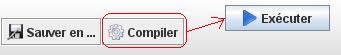

Javascool
Environnement Javascool
Après avoir écrit un programme Javascool
(exemple),
vous devez en faire contrôler la syntaxe (bouton Compiler) :
s'il n'y a aucune erreur, un bouton Executer apparaît...

Si vous modifiez ensuite ce programme, vous devrez le recompiler avant de cliquer sur le bouton Executer :
sinon, c'est le programme initial qui s'exécutera !
Création de programmes Javascool
PluriAlgo peut vous aider
à créer des programmes Javascool (exemple) :
-
Fixez Javascool comme langage de développement dans l'onglet "Principal".
-
Complétez l'onglet "Principal" (exemple), puis
cliquez sur le bouton Nouveau.
-
Complétez l'onglet "Si" (exemple), puis cliquez sur le bouton Insérer
(après avoir fixé la position d'insertion dans l'éditeur).
-
Complétez l'onglet "Boucles" (exemple), puis
cliquez sur le bouton Transformer.
La variable "nom" ayant été "oubliée" à l'étape 2, il reste à
la déclarer et en effectuer la saisie :
-
Complétez l'onglet Principal (exemple), puis
cliquez sur le bouton Insérer.
-
Complétez l'onglet Principal (exemple), puis
cliquez sur le bouton Insérer.
Il est possible de prolonger cet exemple
en introduisant une fonction
calculant le taux de remise à partir de la quantité :
-
Sélectionnez la portion de code calculant le taux de remise
(exemple).
-
Complétez l'onglet "Principal" (exemple),
puis cliquez sur le bouton Reformuler.
Traduction de programmes Javascool
Voir traduction.